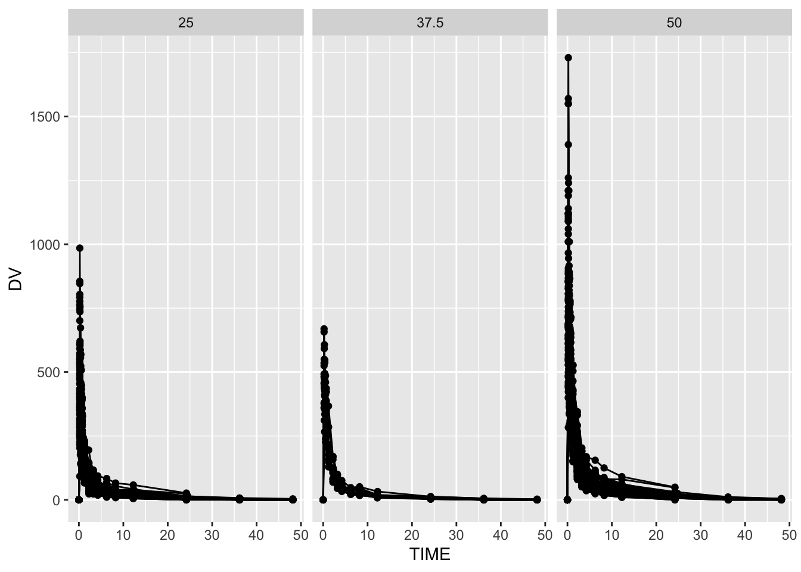
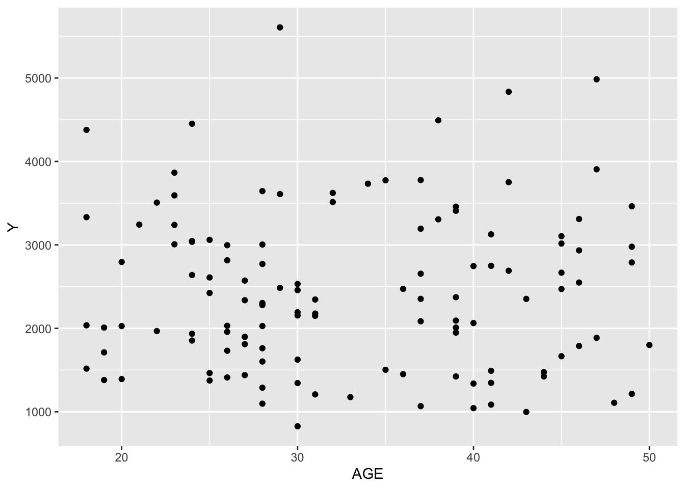
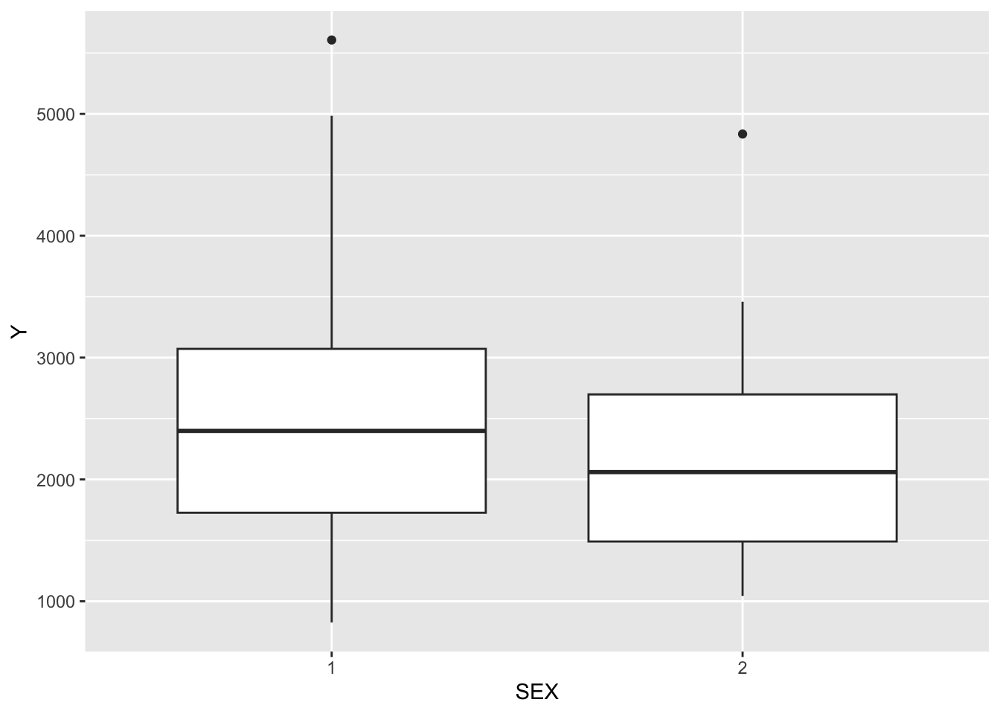
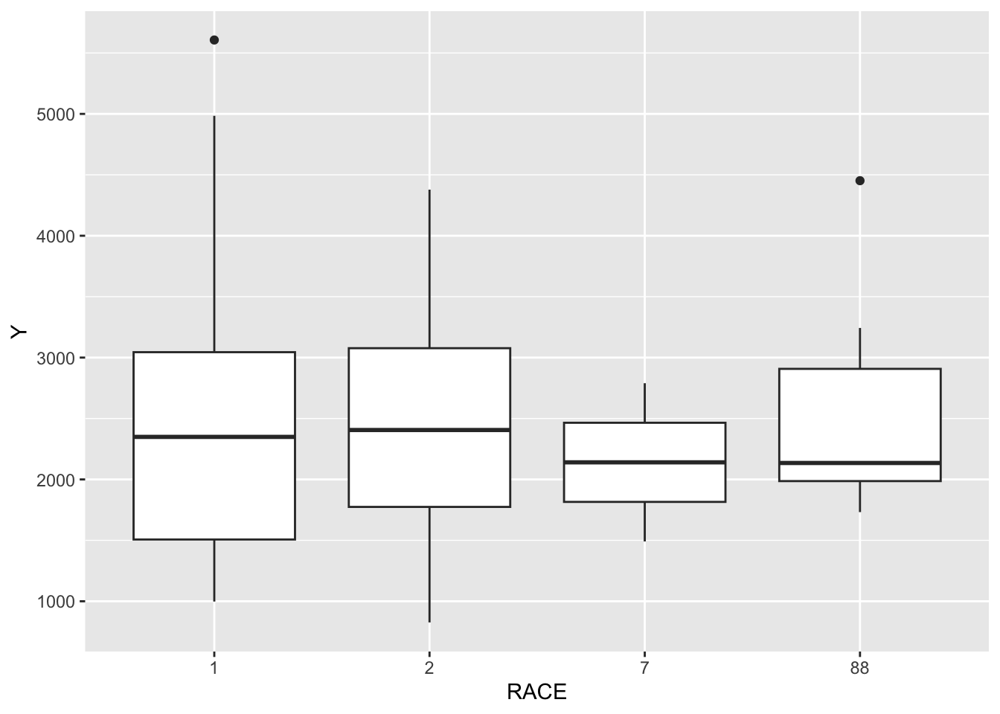
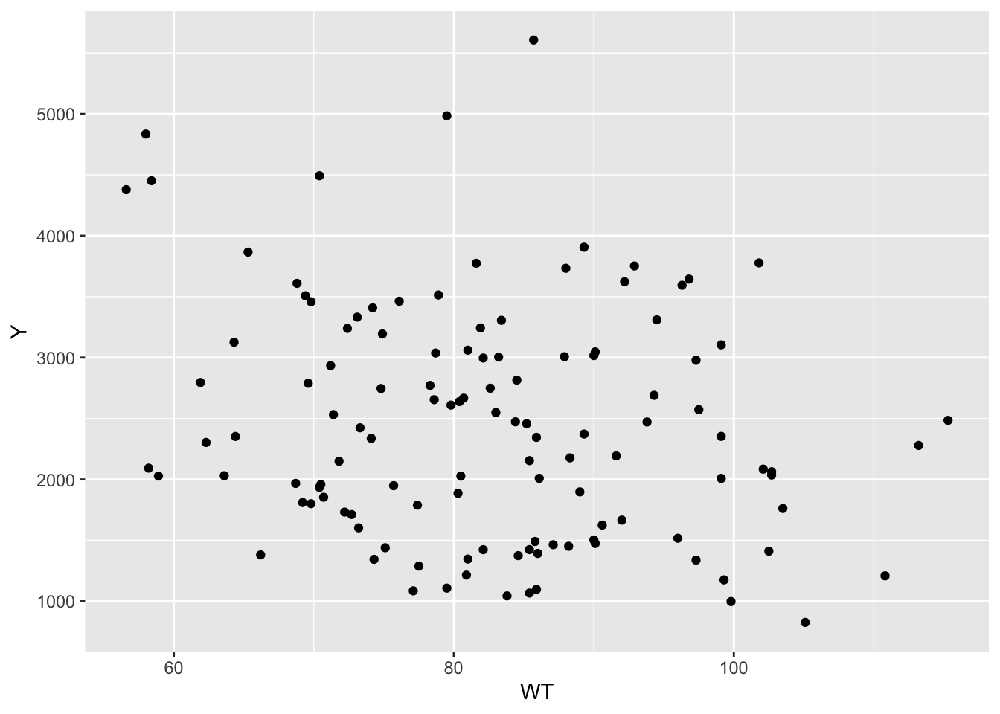
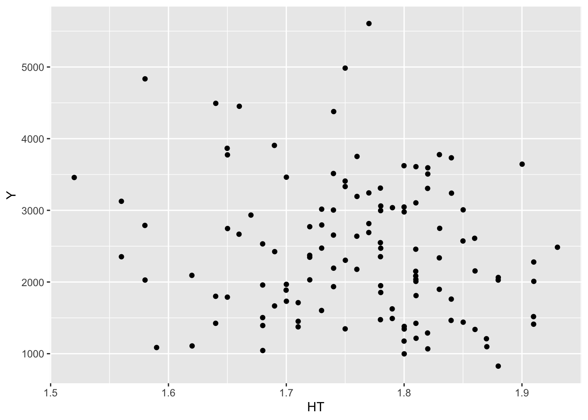
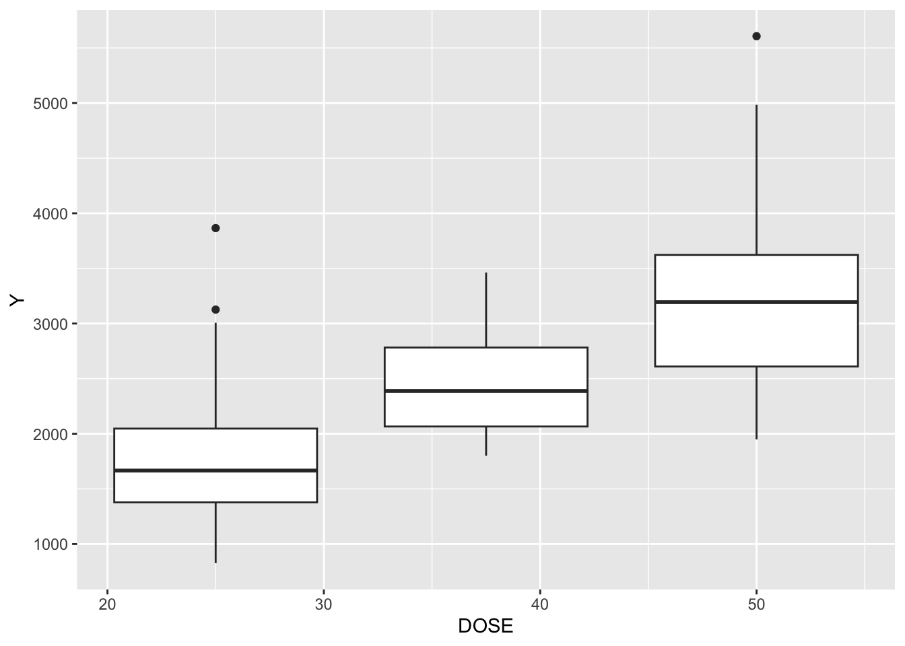

── Conflicts ────────────────────────────────────────── tidyverse_conflicts() ──
✖ dplyr::filter() masks stats::filter()
✖ dplyr::lag() masks stats::lag()
ℹ Use the conflicted package (<http://conflicted.r-lib.org/>) to force all conflicts to become errors
Warning: package 'broom.mixed' was built under R version 4.5.2
library(dotwhisker)library(Metrics)
Attaching package: 'Metrics'
The following objects are masked from 'package:yardstick':
accuracy, mae, mape, mase, precision, recall, rmse, smape
Data Processing and Exploration
##Read in datavmavo <-read_csv("Mavoglurant_A2121_nmpk.csv")
Rows: 2678 Columns: 17
── Column specification ────────────────────────────────────────────────────────
Delimiter: ","
dbl (17): ID, CMT, EVID, EVI2, MDV, DV, LNDV, AMT, TIME, DOSE, OCC, RATE, AG...
ℹ Use `spec()` to retrieve the full column specification for this data.
ℹ Specify the column types or set `show_col_types = FALSE` to quiet this message.
##DV vs TIME plot ggplot(mavo, aes(x = TIME, y = DV, group = ID)) +geom_line() +geom_point() +facet_wrap(~ DOSE, scales ="fixed")

##Removing OCC = 2mavo <- mavo %>%filter(OCC ==1)##Compute sum of DV for each individual, Exclude TIME = 0mavo_exclude <- mavo %>%filter(TIME !=0) %>%group_by(ID) %>%summarize(Y =sum(DV, na.rm =TRUE))##Only include TIME == 0mavo_include <- mavo %>%filter(TIME ==0) ##Join the two dataframes mavo_merged <-full_join(mavo_exclude, mavo_include, by ="ID")##Convert RACE and SEX to factors, keeps only: Y, DOSE, AGE, SEX, RACE, WT, HTmavo_final <- mavo_merged %>%mutate(RACE =factor(RACE), SEX =factor(SEX)) %>%select(Y, DOSE, AGE, SEX, RACE, WT, HT)
More exploring
##Just so basic scatterplots and box plotsggplot(mavo_final, aes(x = AGE, y = Y)) +geom_point() #looks like no relationship?

ggplot(mavo_final, aes(x = SEX, y = Y)) +geom_boxplot() #they don't look too different?

ggplot(mavo_final, aes(x = RACE, y = Y)) +geom_boxplot() #they don't look too different?

ggplot(mavo_final, aes(x = WT, y = Y)) +geom_point() #looks like no relationship?

ggplot(mavo_final, aes(x = HT, y = Y)) +geom_point() #looks like no relationship?

ggplot(mavo_final, aes(x = DOSE, y = Y, group = DOSE)) +geom_boxplot() #this doesn't surprise me, looks proportional?

Model Fitting
##Y as outcome, DOSE as predictorlm_yd <-linear_reg()lm_yd_fit <- lm_yd %>%fit(Y ~ DOSE, data = mavo_final)tidy(lm_yd_fit)
Warning: Using the `size` aesthetic with geom_segment was deprecated in ggplot2 3.4.0.
ℹ Please use the `linewidth` aesthetic instead.
ℹ The deprecated feature was likely used in the dotwhisker package.
Please report the issue at <https://github.com/fsolt/dotwhisker/issues>.
metrics_yd <- predict_yd %>%metrics(truth = Y, estimate = .pred) %>%filter(.metric %in%c("rmse", "rsq")) #this part I had to get help from chatgpt to figure outprint(metrics_yd)
# A tibble: 2 × 3
.metric .estimator .estimate
<chr> <chr> <dbl>
1 rmse standard 666.
2 rsq standard 0.516
The RMSE for this model is 666.46, meaning it’s predictions of Y are typically about 666.46 units away from the true Y measured. The R-squared is 0.516, meaning the explains only 51.6% of the variation in Y. Typically, i would say that this means it’s not a great model, but I don’t even know anymore.
##Y as outcome, all variables as predictorslm_y_all <-linear_reg()lm_y_all_fit <- lm_y_all %>%fit(Y ~ DOSE + AGE + SEX + RACE + WT + HT, data = mavo_final)tidy(lm_y_all_fit)
# A tibble: 2 × 3
.metric .estimator .estimate
<chr> <chr> <dbl>
1 rmse standard 591.
2 rsq standard 0.619
The RMSE for this model is 590.85, meaning it’s predictions of Y are typically about 590.85 units away from the true Y measured. The R-squared is 0.619, meaning the explains only 61.9% of the variation in Y. Typically, i would say that this means it’s not a great model, but it does seem to explain more and have closer predictions that the previous model, which makes sense because this one account for the effects of all possible predictors.
##SEX as outcome, DOSE as predictorlog_sex_dose <-logistic_reg() %>%set_engine("glm")log_sex_dose_fit <- log_sex_dose %>%fit(SEX ~ DOSE, data = mavo_final)tidy(log_sex_dose_fit)
class_pred_sex_dose <-predict(log_sex_dose_fit, new_data = mavo_final, type ="class")prob_pred_sex_dose <-predict(log_sex_dose_fit, new_data = mavo_final, type ="prob")predict_sex_dose <- mavo_final %>%bind_cols(class_pred_sex_dose) %>%bind_cols(prob_pred_sex_dose)event_class <-levels(mavo_final$SEX)[2] event_prob_col <- rlang::sym(paste0(".pred_", event_class))metrics_sex_dose <- yardstick::metric_set(yardstick::accuracy, yardstick::roc_auc)(predict_sex_dose, truth = SEX, estimate = .pred_class, !!event_prob_col, event_level ="second") #this part I had to get help from chatgpt to figure outprint(metrics_sex_dose)
The model’s accuracy is 0.867, meaning 86.7% of observations were classified correctly. The ROC AUC is 0.592, indicating a pretty weak ability to distinguish between the two SEX categories, which is interesting.
##SEX as outcome, all variables as predictorslog_sex_all <-logistic_reg() %>%set_engine("glm")log_sex_all_fit <- log_sex_dose %>%fit(SEX ~ DOSE + AGE + Y + RACE + WT + HT, data = mavo_final)tidy(log_sex_all_fit)
The model’s accuracy is 0.942, meaning 94.2% of observations were classified correctly. The ROC AUC is 0.980, indicating a good ability to distinguish between the two SEX categories, which is significantly better than the previous model, which normally I would say makes sense since we are accounting for all the predictors, but with the outcome being SEX, I’m not really sure what this means.